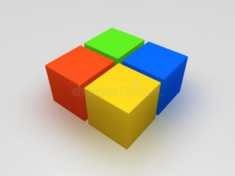

Data types
 Любая программа во время своей работы хранит в оперативной памяти различные данные:
Любая программа во время своей работы хранит в оперативной памяти различные данные:
- названия и фамилии
- номера и количества
- суммы и проценты
- даты и время
- ... и тому подобное
то есть хранит данные различных типов.
Если бы данные имели цвет, то память программы могла бы выглядеть так:
Есть один тонкий момент, связанный с пониманием наследования типов,
но на данном этапе (пока этого понимания у нас нет)
будем считать, что любое значение относится к одному и только к одному типу.Иными словами, никаких многоцветных кубиков быть не может:
Каждый кубик строго определённого цвета. Только так!
Разнообразие типов данных определяется тем, на каком языке написана программа.
Некоторые языки программирования различают множество типов данных:

В языке Пайтон их только четыре:

Память программы на этом языке могла бы выглядеть так:
Типы данных языка Пайтон имеют свои названия: